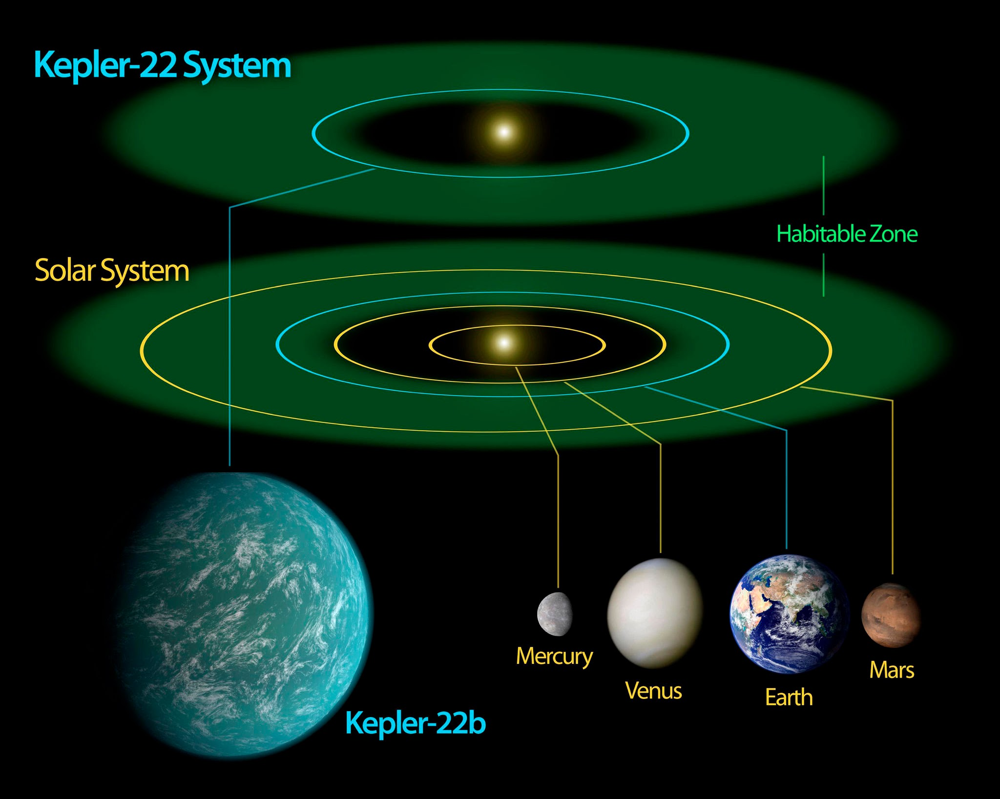
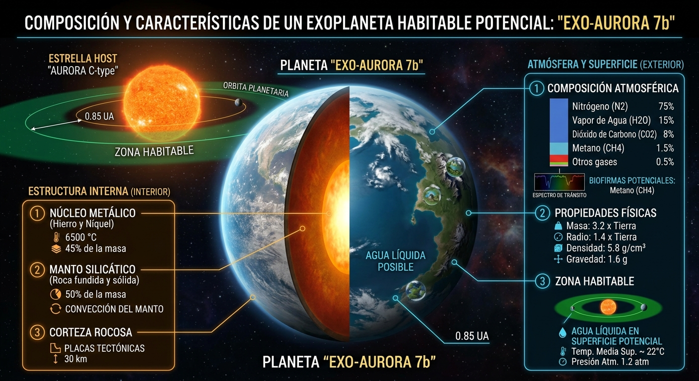
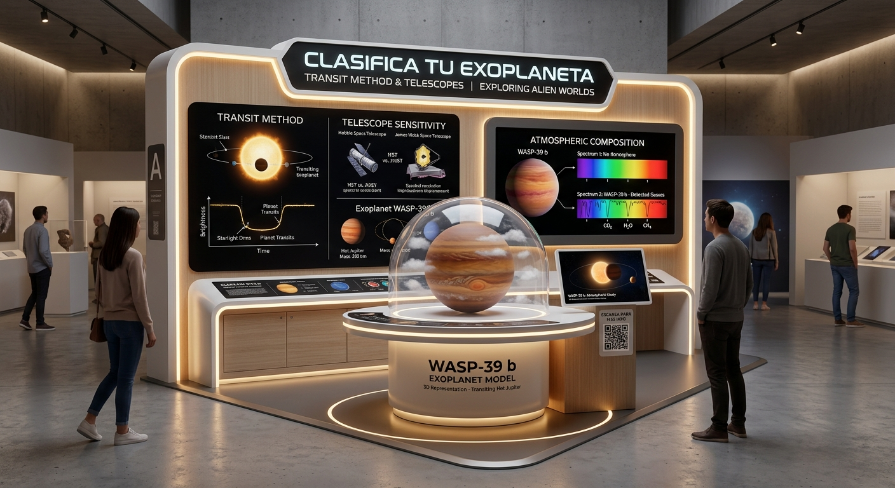

Hidrógeno y helio
Son gases ligeros comunes en las atmósferas extensas de gigantes gaseosos.
PROYECTO INTERDISCIPLINAR · EXPLORANDO LAS ATMÓSFERAS EXOPLANETARIAS
Descubre cómo el Telescopio Espacial James Webb permite estudiar la composición química de las atmósferas de mundos lejanos.
Comenzar exploración ↓Los exoplanetas son mundos que orbitan estrellas fuera de nuestro Sistema Solar. Estudiar sus atmósferas permite conocer su composición química, temperatura y posibles condiciones de habitabilidad. Gracias al Telescopio Espacial James Webb (JWST), los científicos pueden detectar moléculas presentes en estas atmósferas y descubrir una gran diversidad de químicas exóticas en otros planetas.
El análisis de estas atmósferas ayuda a los astrónomos a comprender cómo se forman y evolucionan los planetas. Además, permite comparar estos mundos con los planetas de nuestro Sistema Solar y descubrir condiciones que no existen en la Tierra.
El JWST ha permitido observar con mayor detalle algunos exoplanetas y detectar sustancias como agua, dióxido de carbono y metano. Estos descubrimientos ayudan a ampliar nuestro conocimiento sobre la diversidad de planetas que existen en el universo y sobre las condiciones que podrían permitir la vida.
Estudiar las características químicas de las atmósferas de los exoplanetas mediante las observaciones del Telescopio Espacial James Webb, con el fin de comprender su diversidad y las condiciones presentes en estos mundos.
Los exoplanetas son mundos situados fuera de nuestro Sistema Solar. Los astrónomos pueden estudiarlos mediante observaciones de la luz de sus estrellas. Uno de los métodos utilizados es el tránsito: cuando un planeta pasa frente a su estrella desde nuestro punto de vista, la cantidad de luz observada disminuye ligeramente. Esa disminución permite obtener información sobre el planeta y su órbita.

Son gases ligeros comunes en las atmósferas extensas de gigantes gaseosos.
Es una molécula importante para estudiar la química y el efecto invernadero atmosférico.
Sus señales espectrales pueden ayudar a caracterizar las condiciones de una atmósfera.
En mundos muy calientes pueden aparecer condiciones y compuestos poco comunes en la Tierra.
JWST
El Telescopio Espacial James Webb observa principalmente en el infrarrojo, lo que permite estudiar señales químicas presentes en las atmósferas de algunos exoplanetas.
La zona habitable es la región alrededor de una estrella donde un planeta rocoso podría mantener agua líquida en su superficie, bajo condiciones adecuadas. Su ubicación depende, entre otros factores, de la estrella. Estar en esta zona no garantiza que exista vida.
Observa el planeta en 3D y cambia el tipo de mundo, la temperatura y los valores relativos de distintos gases. La visualización es un modelo educativo, no una medición real del JWST.
La luz estelar atraviesa las capas gaseosas del planeta. Las moléculas pueden dejar señales características en el espectro.
Figura 1. Simulación 3D educativa de un exoplaneta y sus partículas atmosféricas; los controles permiten explorar mezclas hipotéticas, no datos reales del JWST.
Cuando la luz pasa a través de una atmósfera, algunas moléculas absorben determinadas longitudes de onda. Los instrumentos pueden analizar esas señales para estimar qué sustancias están presentes. La interpretación real requiere modelos y observaciones cuidadosas.

Selecciona una atmósfera y analiza sus características. Después intenta identificar qué información aporta cada composición.
Verás las moléculas del modelo y qué tipo de planeta podrían indicar.
Figura 1. Clasificador didáctico de composiciones atmosféricas: compara moléculas y posibles tipos de exoplanetas. Las mezclas A–D son ejemplos hipotéticos, no mediciones reales.
Los visitantes reciben tarjetas con datos de atmósferas ficticias e intentan identificar qué moléculas están presentes. Después, el grupo explica la respuesta y relaciona la actividad con el trabajo del Telescopio Espacial James Webb.
| El experimento físico muestra | El sitio web muestra |
|---|---|
| Observar una gráfica de tránsito y discutir cómo el tamaño del planeta puede afectar la disminución de luz. | Una simulación 3D para explorar diferentes tipos de exoplanetas. |
| Usar filtros de color sobre un espectro didáctico para relacionar señales con moléculas. | Controles para explorar valores relativos de componentes atmosféricos. |
| Consultar una ficha de un exoplaneta conocido. | Comparaciones y explicaciones para interpretar diferencias químicas. |
Un exoplaneta ficticio presenta señales de vapor de agua (H₂O), dióxido de carbono (CO₂) y metano (CH₄). ¿Qué puedes concluir a partir de esas moléculas? ¿Puedes asegurar que existe vida allí?
Estas moléculas indican que la atmósfera contiene sustancias importantes para estudiar su química. Sin conocer las cantidades, la temperatura, la presión y otras condiciones, no se puede determinar con seguridad el tipo de planeta ni afirmar que haya vida. El metano y el agua, por separado, no son pruebas de vida.
Figura 2. Reto interactivo de interpretación: relacionar señales moleculares con lo que podemos —y no podemos— concluir sobre un exoplaneta.
